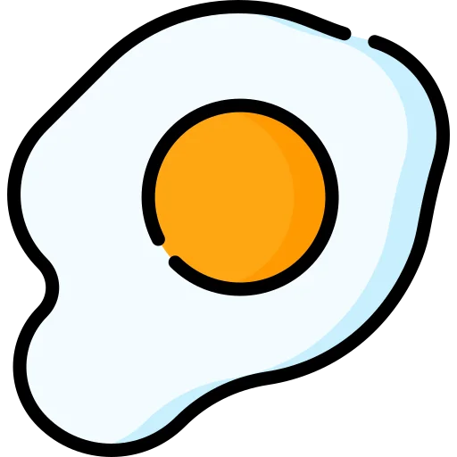

LE R√îLE DES ≈íUFS DANS LA CUISINE üç≥
Liant, humidificateur, épaississant: le substitut dépend du rôle des œufs dans la recette.
- Lifter : gâteaux ou pâtisseries à texture poreuse. Si la recette prévoit plus d'un œuf ou d'un blanc d'œuf en neige, la fonction de l'œuf est de faire lever la pâte
- Humidificateur / liant : muffins, biscuits, gâteaux, pâtisseries, scones et recettes contenant un seul œuf.
- Épaississant : lorsqu'ils sont cuits, les œufs épaississent les crèmes pâtissières, les quiches, les crèmes. . .
Souvent, lorsque la recette ne nécessite qu'un seul œuf, ce n'est pas indispensable, surtout si la recette contient déjà du gluten (blé, seigle, épeautre, kamut. . . ) ou un autre ingrédient faisant office de liant (yaourt de soja, tofu, compote. . . ). Dans ce cas, nous pouvons retirer l'œuf sans affecter la recette. En général, les œufs apportent de la porosité/mousse et de la structure aux pâtes.
POUR AVOIR DANS LES PLACARDS! üß∫
- Fécule de pomme de terre ou de maïs (type amidon de maïs)
- Tétrabrik de crème végétale : soja, riz, avoine, amande. . .
Essayez-les pour voir laquelle vous préférez ! La crème de soja est la plus polyvalente et la plus facile à trouver - Sacs de levure chimique
QU'EST-CE QUE L'AQUAFABA? 
Derrière ce mot un peu étrange se cache le jus de pois chiches, qui va parfait pour les recettes qui demandent du blanc d'oeuf au point de neige. L'aquafaba permet également de faire une mousse parfaite pour faire des meringues. Il faut le prouver!
- Egoutter un bocal de pois chiches
- Récupérer le liquide
- A l'aide d'un batteur électrique puissant, battre en neige et ajouter le sucre glace, comme vous le feriez en battant des blancs d'œufs (en battant un peu plus longtemps). Vous obtiendrez une mousse ferme au goût neutre, qui peut être mijotée un peu plus longtemps

UTILISATIONS SP√âCIFIQUES üéØ
Découvrez le goût des œufs durs !
Le goût et l'odeur du sel Kala Namak sont très proches de ceux des œufs durs grâce au soufre qu'il contient. Comme le sel de mer, ce condiment est composé principalement de chlorure de sodium. Vous pouvez en mettre sur les avocats, le tofu, les salades, etc. , mais attention : le goût est très intense, n'exagérez pas avec la quantité ! Le sel Kala Namak, également appelé sel noir ou sel de l'Himalaya, provient principalement de l'Himalaya népalais. Vous pouvez les trouver chez certains herboristes, dans des magasins spécialisés ou sur Internet
Donner de la couleur à un gâteau, une brioche ou un coca
Le lait végétal sucré, la crème végétale ou le sirop d'agave, d'érable ou de datte dilués dans un peu d'eau sont parfaits pour colorer les gâteaux, les pâtisseries et les cakes.
Le lait végétal sucré, la crème végétale ou le sirop d'agave, d'érable ou de datte dilués dans un peu d'eau sont parfaits pour colorer les gâteaux, les pâtisseries et les cakes

Omelettes sans casser d'œufs
Grâce au tofu soyeux ou ferme et à la farine de pois chiches, continuez à déguster des omelettes et des œufs au plat!
Lorsque vous êtes prêt à déguster vos omelettes et vos œufs au plat!
www.infovegana.com/tortilla-de-patatas-vegana
Le substitut d'œuf
Il s'agit d'une préparation que l'on peut trouver dans certains magasins spécialisés.
Le substitut d'œuf est facile à utiliser : il suffit de remplacer un œuf par une dose de substitut d'œuf et un peu d'eau. Il n'est cependant pas indispensable, car les autres possibilités décrites dans cette brochure peuvent remplacer les œufs de la même manière
RETROUVER L'APPARENCE DU BLANC D'ŒUF 
Mélangées à de l'eau, les graines de lin moulues et les graines de chia donnent une substance collante très semblable à la texture du blanc d'oeuf. Il est préférable de moudre les graines de lin au fur et à mesure que nous en avons besoin, car une fois moulues, elles s'oxydent rapidement. Comptez deux cuillères à café de graines de lin moulues ou deux cuillères à café de graines de chia + 30ml de liquide. Les graines de chia doivent reposer 10 minutes après avoir été mélangées, entières, avec de l'eau.
JUS DE CITRON, VINAIGRE ET BICARBONATE POUR FAIRE MONTER LA P√ÇTE üçπ
Ces ingrédients remplacent le blanc d'œuf battu en neige. Ils donnent du moelleux et aident la pâte à lever en complément de la levure, par exemple pour les gâteaux, les muffins et les cupcakes.
Comme la réaction se produit après les avoir ajoutés à la pâte, ajoutez-les au dernier moment, mélangez la pâte et enfournez-la immédiatement.
Compter une cuillère à café de bicarbonate de soude + une cuillère à café de vinaigre de cidre ou de jus de citron. Le jus de citron est préférable pour les recettes sucrées.
FARINES POUR √âPAISSISSEMENT üåæ
Pour épaissir les quiches et les tartes, il suffit généralement de remplacer 1/4 de la farine habituelle de la recette par de la farine de pois chiches, de lupin ou de soja, ou des farines précuites appelées /crèmes/ (riz, millet, kokkoh...). Les farines de pois chiches, de lupin et de soja apportent une légère couleur dorée aux recettes. Grâce à ces farines, vous pouvez également modifier vos pâtes pour faire des crêpes!
L'AGAR-AGAR, UN PUISSANT G√âLIFIANT üçÆ
L'agar-agar est une algue incolore, sans saveur ni odeur, qui sert à donner une texture gélatineuse. Vous pouvez l'utiliser dans n'importe quelle recette que vous voulez solidifier: gâteaux, flanes, panna-cotta... Il faut faire bouillir l'agar-agar pour activer son effet gélifiant, qui prendra effet lorsque la préparation aura refroidi. Choisissez la version en poudre, qui est beaucoup plus pratique. Lorsque nous réchauffons un plat fait avec de l'agar-agar, il ne perd pas sa consistance. 2 grammes d'agar-agar en poudre (environ une cuillère à café plate) suffisent pour 500 ml de liquide.

*Basé sur le contenu original de L214